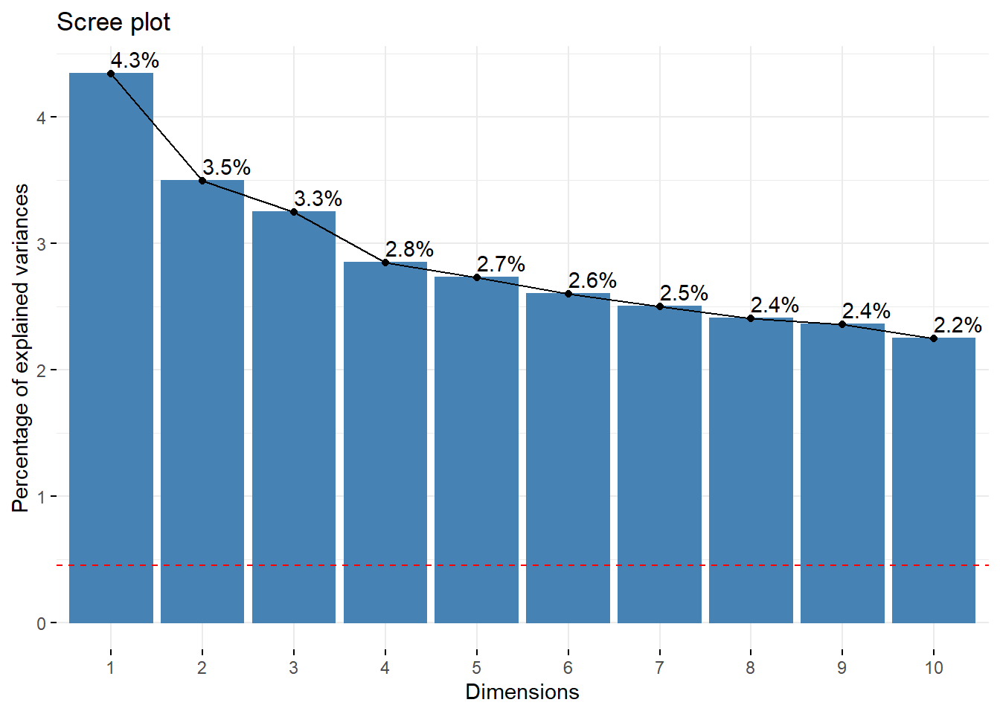
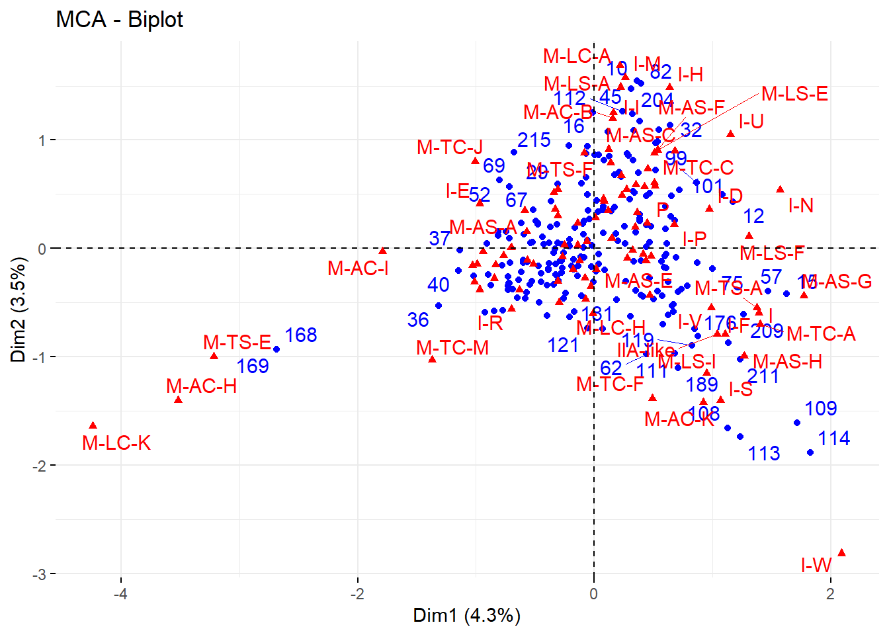
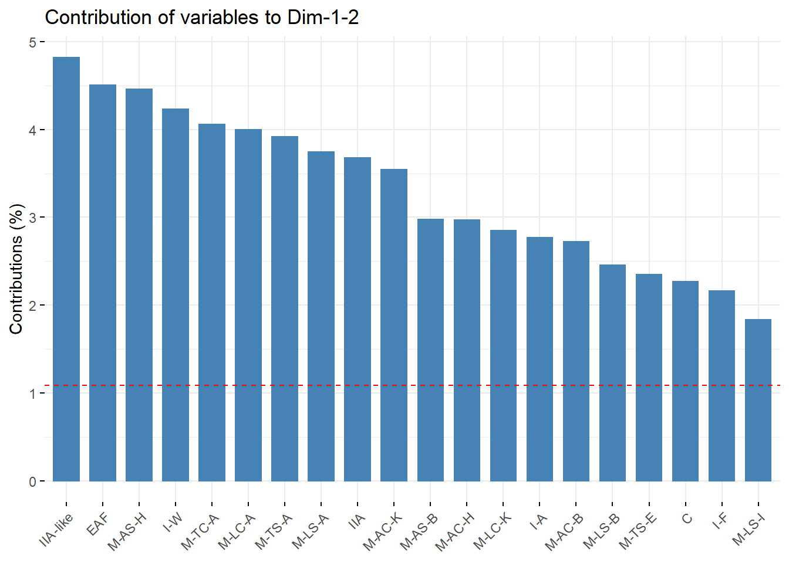
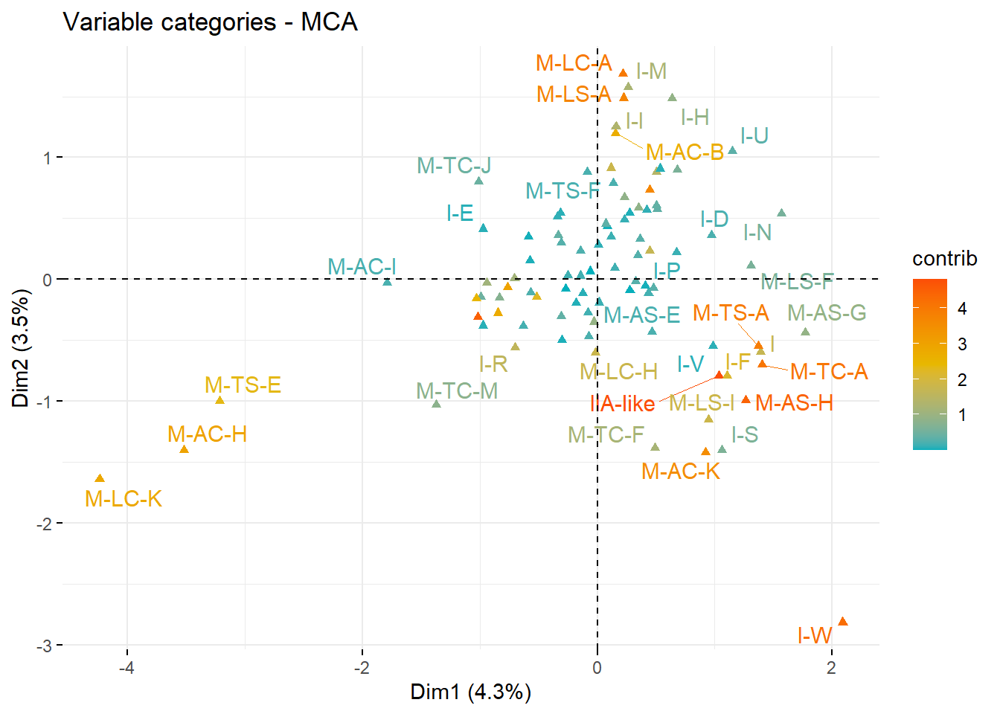
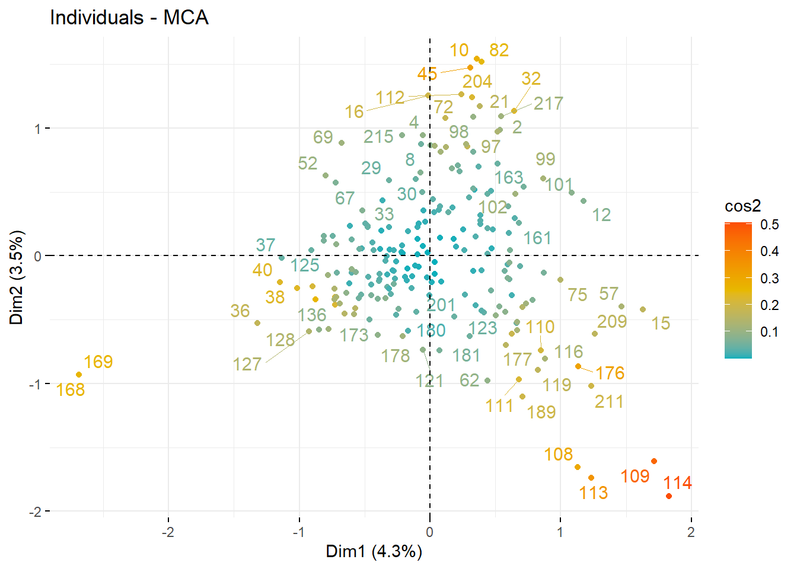

Last updated: 2022-09-14
Checks: 7 0
Knit directory: rockart_mca_ca/
This reproducible R Markdown analysis was created with workflowr (version 1.7.0). The Checks tab describes the reproducibility checks that were applied when the results were created. The Past versions tab lists the development history.
Great! Since the R Markdown file has been committed to the Git repository, you know the exact version of the code that produced these results.
Great job! The global environment was empty. Objects defined in the global environment can affect the analysis in your R Markdown file in unknown ways. For reproduciblity it’s best to always run the code in an empty environment.
The command set.seed(20220913) was run prior to running
the code in the R Markdown file. Setting a seed ensures that any results
that rely on randomness, e.g. subsampling or permutations, are
reproducible.
Great job! Recording the operating system, R version, and package versions is critical for reproducibility.
Nice! There were no cached chunks for this analysis, so you can be confident that you successfully produced the results during this run.
Great job! Using relative paths to the files within your workflowr project makes it easier to run your code on other machines.
Great! You are using Git for version control. Tracking code development and connecting the code version to the results is critical for reproducibility.
The results in this page were generated with repository version 402397d. See the Past versions tab to see a history of the changes made to the R Markdown and HTML files.
Note that you need to be careful to ensure that all relevant files for
the analysis have been committed to Git prior to generating the results
(you can use wflow_publish or
wflow_git_commit). workflowr only checks the R Markdown
file, but you know if there are other scripts or data files that it
depends on. Below is the status of the Git repository when the results
were generated:
Ignored files:
Ignored: .Rhistory
Ignored: .Rproj.user/
Note that any generated files, e.g. HTML, png, CSS, etc., are not included in this status report because it is ok for generated content to have uncommitted changes.
These are the previous versions of the repository in which changes were
made to the R Markdown (analysis/MCA.Rmd) and HTML
(docs/MCA.html) files. If you’ve configured a remote Git
repository (see ?wflow_git_remote), click on the hyperlinks
in the table below to view the files as they were in that past version.
| File | Version | Author | Date | Message |
|---|---|---|---|---|
| html | 86179cb | Philipp Bayer | 2022-09-14 | Build site. |
| Rmd | a84abca | Philipp Bayer | 2022-09-14 | wflow_publish("analysis/MCA.Rmd") |
MCA is an extension of CA that works better when the dataset is larger. Perhaps most famously used in the social sciences in Bourdieu, P. “La distinction.” Revue Philosophique de la France Et de l 172.1 (1982).
We already did some EDA in the CA part so we will not repeat that here, rather we’ll jump straight into the MCA. We will use the same packages as CA - FactoMineR and factoextra. See tutorials like https://rpubs.com/gaston/MCA or https://cran.r-project.org/web/packages/factoextra/readme/README.html or http://www.sthda.com/english/articles/31-principal-component-methods-in-r-practical-guide/114-mca-multiple-correspondence-analysis-in-r-essentials/
library(FactoMineR)Warning: package 'FactoMineR' was built under R version 4.2.1library(factoextra)Warning: package 'factoextra' was built under R version 4.2.1Loading required package: ggplot2Welcome! Want to learn more? See two factoextra-related books at https://goo.gl/ve3WBalibrary(tidyverse)── Attaching packages ─────────────────────────────────────── tidyverse 1.3.1 ──✔ tibble 3.1.7 ✔ dplyr 1.0.9
✔ tidyr 1.2.0 ✔ stringr 1.4.0
✔ readr 2.1.2 ✔ forcats 0.5.1
✔ purrr 0.3.4 ── Conflicts ────────────────────────────────────────── tidyverse_conflicts() ──
✖ dplyr::filter() masks stats::filter()
✖ dplyr::lag() masks stats::lag()df <- data.frame(readxl::read_xlsx('./data/MCA_Macropods_Data.xlsx', sheet = 'Macropods_Complete ind'))
head(df) Style Condition Arm.Curvature Arm.Shape Leg.Curvature Leg.Shape
1 Gwion C M-AC-B M-AS-B M-LC-B M-LS-B
2 IIA P M-AC-C M-AS-C M-LC-C M-LS-C
3 IIA P M-AC-D M-AS-D M-LC-B M-LS-D
4 IIA C M-AC-B M-AS-C M-LC-C M-LS-B
5 IIA C M-AC-C M-AS-E M-LC-C M-LS-E
6 EAF C M-AC-C M-AS-D M-LC-D M-LS-D
Tail.Curvature Tail.Shape Infill
1 M-TC-B M-TS-B I-K
2 M-TC-C M-TS-C I-H
3 M-TC-C M-TS-C I-H
4 M-TC-D M-TS-B I-H
5 M-TC-E M-TS-D I-L
6 M-TC-E M-TS-D I-Kres.mca <- MCA(df, graph = FALSE, ncp = 5)
summary(res.mca)
Call:
MCA(X = df, ncp = 5, graph = FALSE)
Eigenvalues
Dim.1 Dim.2 Dim.3 Dim.4 Dim.5 Dim.6 Dim.7
Variance 0.401 0.323 0.300 0.263 0.252 0.240 0.231
% of var. 4.346 3.498 3.251 2.849 2.731 2.602 2.502
Cumulative % of var. 4.346 7.844 11.095 13.944 16.675 19.277 21.780
Dim.8 Dim.9 Dim.10 Dim.11 Dim.12 Dim.13 Dim.14
Variance 0.222 0.218 0.207 0.205 0.198 0.194 0.188
% of var. 2.404 2.359 2.250 2.220 2.147 2.105 2.041
Cumulative % of var. 24.184 26.543 28.793 31.013 33.160 35.264 37.305
Dim.15 Dim.16 Dim.17 Dim.18 Dim.19 Dim.20 Dim.21
Variance 0.180 0.179 0.169 0.162 0.161 0.157 0.155
% of var. 1.954 1.942 1.829 1.760 1.743 1.702 1.676
Cumulative % of var. 39.259 41.201 43.030 44.790 46.533 48.234 49.910
Dim.22 Dim.23 Dim.24 Dim.25 Dim.26 Dim.27 Dim.28
Variance 0.151 0.147 0.144 0.141 0.140 0.135 0.133
% of var. 1.638 1.590 1.558 1.532 1.518 1.466 1.441
Cumulative % of var. 51.548 53.138 54.697 56.229 57.746 59.212 60.653
Dim.29 Dim.30 Dim.31 Dim.32 Dim.33 Dim.34 Dim.35
Variance 0.130 0.127 0.125 0.122 0.120 0.118 0.116
% of var. 1.415 1.374 1.352 1.324 1.300 1.279 1.253
Cumulative % of var. 62.068 63.442 64.794 66.118 67.418 68.697 69.950
Dim.36 Dim.37 Dim.38 Dim.39 Dim.40 Dim.41 Dim.42
Variance 0.112 0.111 0.106 0.106 0.103 0.100 0.100
% of var. 1.216 1.199 1.154 1.146 1.112 1.089 1.080
Cumulative % of var. 71.167 72.366 73.520 74.667 75.779 76.868 77.948
Dim.43 Dim.44 Dim.45 Dim.46 Dim.47 Dim.48 Dim.49
Variance 0.097 0.095 0.092 0.090 0.085 0.085 0.081
% of var. 1.052 1.031 1.001 0.974 0.925 0.918 0.875
Cumulative % of var. 79.000 80.032 81.032 82.006 82.931 83.849 84.724
Dim.50 Dim.51 Dim.52 Dim.53 Dim.54 Dim.55 Dim.56
Variance 0.078 0.074 0.071 0.069 0.066 0.065 0.063
% of var. 0.850 0.806 0.767 0.747 0.721 0.708 0.686
Cumulative % of var. 85.574 86.380 87.147 87.895 88.616 89.323 90.009
Dim.57 Dim.58 Dim.59 Dim.60 Dim.61 Dim.62 Dim.63
Variance 0.061 0.058 0.056 0.054 0.053 0.052 0.048
% of var. 0.660 0.629 0.610 0.585 0.576 0.562 0.519
Cumulative % of var. 90.669 91.298 91.908 92.493 93.069 93.632 94.151
Dim.64 Dim.65 Dim.66 Dim.67 Dim.68 Dim.69 Dim.70
Variance 0.047 0.043 0.040 0.040 0.039 0.037 0.034
% of var. 0.510 0.461 0.439 0.430 0.420 0.397 0.373
Cumulative % of var. 94.660 95.121 95.560 95.990 96.410 96.808 97.181
Dim.71 Dim.72 Dim.73 Dim.74 Dim.75 Dim.76 Dim.77
Variance 0.033 0.030 0.029 0.027 0.027 0.025 0.021
% of var. 0.356 0.328 0.316 0.298 0.287 0.273 0.232
Cumulative % of var. 97.537 97.865 98.181 98.479 98.766 99.039 99.271
Dim.78 Dim.79 Dim.80 Dim.81 Dim.82 Dim.83
Variance 0.020 0.015 0.012 0.011 0.006 0.003
% of var. 0.219 0.163 0.133 0.114 0.067 0.033
Cumulative % of var. 99.490 99.653 99.786 99.900 99.967 100.000
Individuals (the 10 first)
Dim.1 ctr cos2 Dim.2 ctr cos2 Dim.3 ctr cos2
1 | -0.477 0.254 0.039 | 0.233 0.076 0.009 | 0.183 0.050 0.006
2 | 0.535 0.320 0.024 | 0.985 1.348 0.083 | 0.317 0.150 0.009
3 | 0.469 0.246 0.012 | 0.508 0.358 0.014 | 0.111 0.018 0.001
4 | -0.056 0.003 0.000 | 0.944 1.238 0.094 | 0.716 0.768 0.054
5 | 0.339 0.129 0.003 | 0.516 0.370 0.007 | -0.671 0.674 0.012
6 | -0.329 0.121 0.020 | -0.004 0.000 0.000 | -0.552 0.455 0.055
7 | -0.744 0.619 0.044 | 0.157 0.034 0.002 | 1.255 2.357 0.126
8 | -0.069 0.005 0.000 | 0.876 1.067 0.050 | -0.381 0.217 0.009
9 | 0.124 0.017 0.003 | 0.851 1.006 0.135 | 0.378 0.213 0.027
10 | 0.360 0.145 0.014 | 1.545 3.320 0.263 | -0.202 0.061 0.004
1 |
2 |
3 |
4 |
5 |
6 |
7 |
8 |
9 |
10 |
Categories (the 10 first)
Dim.1 ctr cos2 v.test Dim.2 ctr cos2 v.test Dim.3
EAF | -1.015 7.429 0.362 -8.967 | -0.311 0.869 0.034 -2.752 | -0.169
Gwion | -0.307 0.351 0.015 -1.802 | -0.301 0.419 0.014 -1.766 | -0.389
Gwion-like | -0.310 0.263 0.011 -1.530 | 0.303 0.311 0.010 1.492 | 0.147
IIA | 0.449 1.802 0.096 4.616 | 0.735 6.002 0.257 7.559 | 0.120
IIA-like | 1.039 5.502 0.243 7.347 | -0.792 3.972 0.141 -5.601 | 0.234
C | -0.518 3.799 0.280 -7.889 | -0.145 0.368 0.022 -2.202 | -0.143
I | 1.391 2.648 0.100 4.723 | -0.597 0.606 0.018 -2.027 | 0.480
P | 0.446 2.424 0.156 5.885 | 0.235 0.837 0.043 3.102 | 0.113
M-AC-B | 0.154 0.079 0.003 0.851 | 1.201 6.011 0.199 6.640 | 0.335
M-AC-C | 0.146 0.210 0.012 1.616 | 0.096 0.113 0.005 1.061 | -0.056
ctr cos2 v.test
EAF 0.274 0.010 -1.490 |
Gwion 0.754 0.024 -2.285 |
Gwion-like 0.079 0.002 0.723 |
IIA 0.171 0.007 1.232 |
IIA-like 0.374 0.012 1.657 |
C 0.390 0.022 -2.185 |
I 0.422 0.012 1.631 |
P 0.208 0.010 1.489 |
M-AC-B 0.504 0.015 1.853 |
M-AC-C 0.041 0.002 -0.615 |
Categorical variables (eta2)
Dim.1 Dim.2 Dim.3
Style | 0.554 0.336 0.045 |
Condition | 0.320 0.053 0.027 |
Arm.Curvature | 0.365 0.385 0.533 |
Arm.Shape | 0.463 0.318 0.110 |
Leg.Curvature | 0.305 0.433 0.639 |
Leg.Shape | 0.277 0.435 0.227 |
Tail.Curvature | 0.383 0.262 0.340 |
Tail.Shape | 0.399 0.096 0.597 |
Infill | 0.542 0.585 0.181 |eig.val <- get_eigenvalue(res.mca)
eig.val eigenvalue variance.percent cumulative.variance.percent
Dim.1 0.400797801 4.34600025 4.346000
Dim.2 0.322602911 3.49810386 7.844104
Dim.3 0.299797857 3.25082014 11.094924
Dim.4 0.262741767 2.84900712 13.943931
Dim.5 0.251891151 2.73134983 16.675281
Dim.6 0.239967726 2.60205968 19.277341
Dim.7 0.230768341 2.50230732 21.779648
Dim.8 0.221745890 2.40447351 24.184122
Dim.9 0.217564365 2.35913167 26.543253
Dim.10 0.207461419 2.24958165 28.792835
Dim.11 0.204715818 2.21981008 31.012645
Dim.12 0.198006102 2.14705412 33.159699
Dim.13 0.194091665 2.10460841 35.264308
Dim.14 0.188182753 2.04053587 37.304843
Dim.15 0.180195457 1.95392665 39.258770
Dim.16 0.179091237 1.94195317 41.200723
Dim.17 0.168694460 1.82921704 43.029940
Dim.18 0.162310736 1.75999593 44.789936
Dim.19 0.160737930 1.74294141 46.532878
Dim.20 0.156927379 1.70162218 48.234500
Dim.21 0.154521550 1.67553488 49.910035
Dim.22 0.151076590 1.63817989 51.548215
Dim.23 0.146637042 1.59004021 53.138255
Dim.24 0.143706126 1.55825920 54.696514
Dim.25 0.141310005 1.53227717 56.228791
Dim.26 0.139950808 1.51753888 57.746330
Dim.27 0.135170117 1.46570007 59.212030
Dim.28 0.132867837 1.44073558 60.652766
Dim.29 0.130491808 1.41497141 62.067737
Dim.30 0.126721193 1.37408522 63.441822
Dim.31 0.124707248 1.35224727 64.794070
Dim.32 0.122060490 1.32354748 66.117617
Dim.33 0.119910762 1.30023718 67.417854
Dim.34 0.117974993 1.27924692 68.697101
Dim.35 0.115583551 1.25331562 69.950417
Dim.36 0.112178658 1.21639509 71.166812
Dim.37 0.110611221 1.19939878 72.366211
Dim.38 0.106443770 1.15420956 73.520420
Dim.39 0.105721981 1.14638293 74.666803
Dim.40 0.102566025 1.11216171 75.778965
Dim.41 0.100436103 1.08906618 76.868031
Dim.42 0.099627990 1.08030351 77.948335
Dim.43 0.097014593 1.05196547 79.000300
Dim.44 0.095115990 1.03137821 80.031678
Dim.45 0.092296696 1.00080754 81.032486
Dim.46 0.089790311 0.97362988 82.006116
Dim.47 0.085269604 0.92461016 82.930726
Dim.48 0.084673250 0.91814367 83.848870
Dim.49 0.080689203 0.87494316 84.723813
Dim.50 0.078424571 0.85038691 85.574200
Dim.51 0.074315490 0.80583062 86.380030
Dim.52 0.070771051 0.76739694 87.147427
Dim.53 0.068930660 0.74744089 87.894868
Dim.54 0.066475890 0.72082290 88.615691
Dim.55 0.065248567 0.70751459 89.323206
Dim.56 0.063255806 0.68590633 90.009112
Dim.57 0.060822941 0.65952587 90.668638
Dim.58 0.058047700 0.62943289 91.298071
Dim.59 0.056290213 0.61037581 91.908446
Dim.60 0.053947504 0.58497294 92.493419
Dim.61 0.053113612 0.57593073 93.069350
Dim.62 0.051855859 0.56229245 93.631643
Dim.63 0.047865446 0.51902291 94.150665
Dim.64 0.047015564 0.50980732 94.660473
Dim.65 0.042501157 0.46085592 95.121329
Dim.66 0.040482463 0.43896647 95.560295
Dim.67 0.039613904 0.42954836 95.989844
Dim.68 0.038765505 0.42034885 96.410192
Dim.69 0.036654541 0.39745888 96.807651
Dim.70 0.034386363 0.37286418 97.180515
Dim.71 0.032833840 0.35602959 97.536545
Dim.72 0.030267407 0.32820080 97.864746
Dim.73 0.029169387 0.31629455 98.181040
Dim.74 0.027467513 0.29784050 98.478881
Dim.75 0.026510151 0.28745946 98.766340
Dim.76 0.025184282 0.27308257 99.039423
Dim.77 0.021380528 0.23183706 99.271260
Dim.78 0.020184380 0.21886677 99.490127
Dim.79 0.015003960 0.16269355 99.652820
Dim.80 0.012255465 0.13289059 99.785711
Dim.81 0.010507887 0.11394095 99.899652
Dim.82 0.006196233 0.06718807 99.966840
Dim.83 0.003058098 0.03316010 100.000000Now we have suddenly WAY more rows - 223 - so our cutoff differs. 1 / 222 * 100 = 0.45
fviz_screeplot(res.mca,addlabels=T) +
geom_hline(yintercept=0.45,linetype=2,color="red")
As you can see, MCA has a MUCH lower explained variances than CA, but our cutoff changed?
fviz_mca_biplot(res.mca,
repel = TRUE, # Avoid text overlapping (slow if many point)
ggtheme = theme_minimal())Warning: ggrepel: 187 unlabeled data points (too many overlaps). Consider
increasing max.overlapsWarning: ggrepel: 51 unlabeled data points (too many overlaps). Consider
increasing max.overlaps
Oh. This particular dataset is much larger than the one I used for CA - investigating.
fviz_contrib(res.mca, choice="var",axes=1:2, top = 20)
fviz_mca_var(res.mca, col.var = "contrib",
gradient.cols = c("#00AFBB", "#E7B800", "#FC4E07"),
repel = TRUE, # avoid text overlapping (slow)
ggtheme = theme_minimal()
)Warning: ggrepel: 57 unlabeled data points (too many overlaps). Consider
increasing max.overlaps
And by individual?
fviz_mca_ind(res.mca, col.ind = "cos2",
gradient.cols = c("#00AFBB", "#E7B800", "#FC4E07"),
repel = TRUE, # Avoid text overlapping (slow if many points)
ggtheme = theme_minimal())Warning: ggrepel: 161 unlabeled data points (too many overlaps). Consider
increasing max.overlaps
There are some weird outlier individuals. Hm.
sessionInfo()R version 4.2.0 (2022-04-22 ucrt)
Platform: x86_64-w64-mingw32/x64 (64-bit)
Running under: Windows 10 x64 (build 19044)
Matrix products: default
locale:
[1] LC_COLLATE=English_Australia.utf8 LC_CTYPE=English_Australia.utf8
[3] LC_MONETARY=English_Australia.utf8 LC_NUMERIC=C
[5] LC_TIME=English_Australia.utf8
attached base packages:
[1] stats graphics grDevices utils datasets methods base
other attached packages:
[1] forcats_0.5.1 stringr_1.4.0 dplyr_1.0.9 purrr_0.3.4
[5] readr_2.1.2 tidyr_1.2.0 tibble_3.1.7 tidyverse_1.3.1
[9] factoextra_1.0.7 ggplot2_3.3.6 FactoMineR_2.6 workflowr_1.7.0
loaded via a namespace (and not attached):
[1] fs_1.5.2 lubridate_1.8.0 httr_1.4.3
[4] rprojroot_2.0.3 tools_4.2.0 backports_1.4.1
[7] bslib_0.3.1 utf8_1.2.2 R6_2.5.1
[10] DT_0.23 DBI_1.1.2 colorspace_2.0-3
[13] withr_2.5.0 tidyselect_1.1.2 processx_3.5.3
[16] emmeans_1.7.5 compiler_4.2.0 git2r_0.30.1
[19] cli_3.3.0 rvest_1.0.2 flashClust_1.01-2
[22] xml2_1.3.3 labeling_0.4.2 sass_0.4.1
[25] scales_1.2.0 mvtnorm_1.1-3 callr_3.7.0
[28] multcompView_0.1-8 digest_0.6.29 rmarkdown_2.14
[31] pkgconfig_2.0.3 htmltools_0.5.2 highr_0.9
[34] dbplyr_2.1.1 fastmap_1.1.0 htmlwidgets_1.5.4
[37] rlang_1.0.2 readxl_1.4.0 rstudioapi_0.13
[40] farver_2.1.0 jquerylib_0.1.4 generics_0.1.2
[43] jsonlite_1.8.0 car_3.1-0 magrittr_2.0.3
[46] leaps_3.1 Rcpp_1.0.8.3 munsell_0.5.0
[49] fansi_1.0.3 abind_1.4-5 lifecycle_1.0.1
[52] scatterplot3d_0.3-42 stringi_1.7.6 whisker_0.4
[55] yaml_2.3.5 carData_3.0-5 MASS_7.3-57
[58] grid_4.2.0 promises_1.2.0.1 ggrepel_0.9.1
[61] crayon_1.5.1 lattice_0.20-45 haven_2.5.0
[64] hms_1.1.1 knitr_1.39 ps_1.7.0
[67] pillar_1.7.0 ggpubr_0.4.0 estimability_1.4
[70] ggsignif_0.6.3 reprex_2.0.1 glue_1.6.2
[73] evaluate_0.15 getPass_0.2-2 modelr_0.1.8
[76] vctrs_0.4.1 tzdb_0.3.0 httpuv_1.6.5
[79] cellranger_1.1.0 gtable_0.3.0 assertthat_0.2.1
[82] xfun_0.31 xtable_1.8-4 broom_0.8.0
[85] rstatix_0.7.0 coda_0.19-4 later_1.3.0
[88] cluster_2.1.3 ellipsis_0.3.2